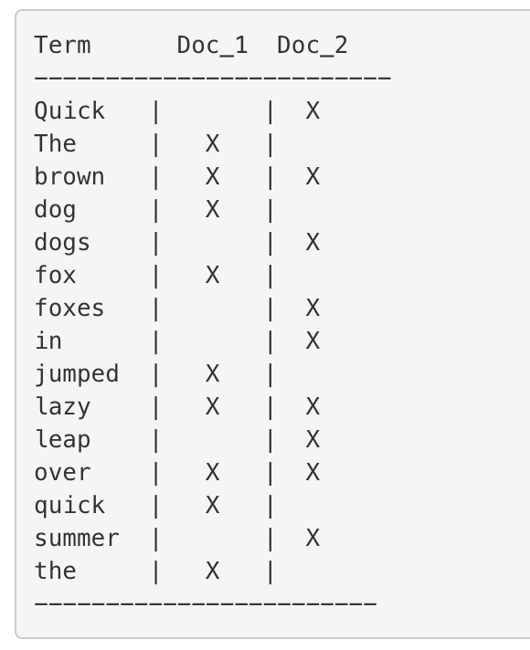
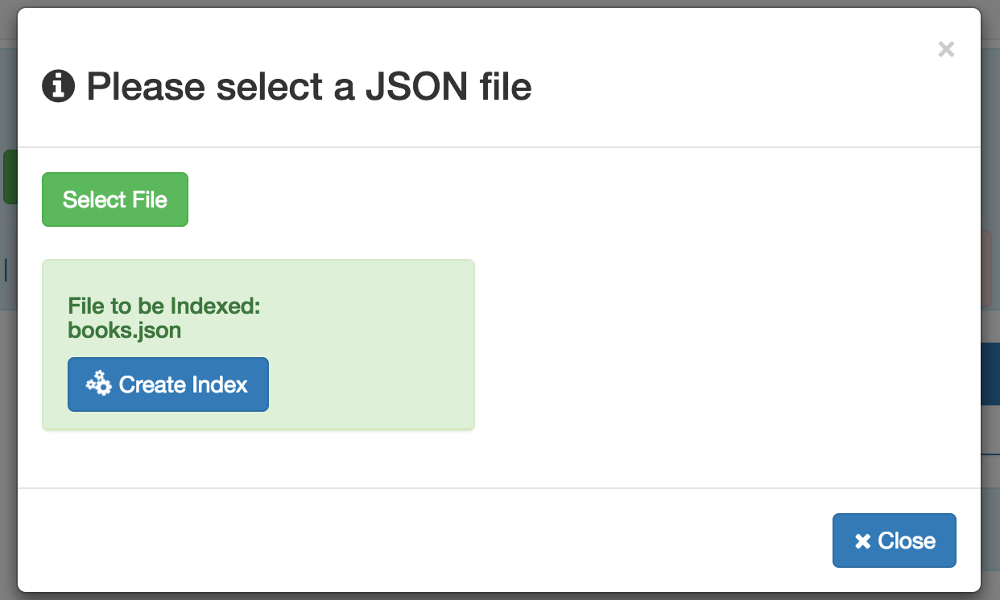

An inverted index a consists of a list of all the unique words that appear in any document, and for each word, a list of the documents in which it appears. This app works on the principle of inverted index with respect to elastic search.To create an inverted index, we first split the content field of each document into separate words (which we call terms, or tokens), create a sorted list of all the unique terms, and then list in which document each term appears.
For example two documents containing : The quick brown fox jumped over the lazy dog and Quick brown foxes leap over lazy dogs in summer,The result looks something like this:

Application User Manual
How To Use
Step 1.On the sidebar in the left hand side , click on Upload File menu item.
Step 2.A modal will pop up , then click on . Choose a JSON file from your computer.The selected file will be loaded as shown below:

Step 3.Click on the button to create/generate index.Click on button to close the modal so as to view the result.